BeamTube
An uncluttered YouTube client for Android phones, tablets and TVs, for people who sit down to watch.
It opens on your subscriptions, shows only what matters and adds the small tools that make long videos nicer to watch. One app for your phone, your tablet and your TV, with the right layout for each.
- Free and open source
- No tracking
- Android 6.0 or newer
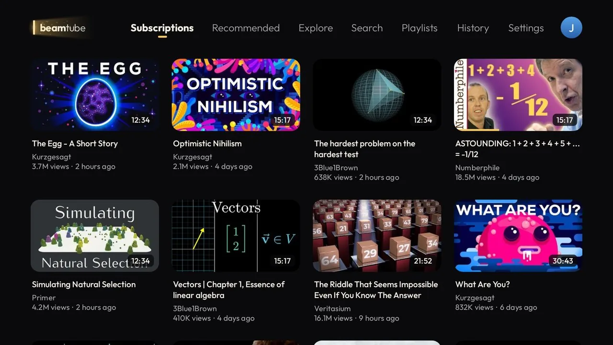
BeamTube is an unofficial app. It is not affiliated with YouTube or Google.
It starts with the channels you chose
The official YouTube app is built to keep you scrolling, with Shorts in every corner, comments under everything, notifications and autoplay into whatever is trending. That’s fine when you want it.
A lot of the time, though, you just want the channels you follow, the hour-long documentary you saved last week, or a playlist to fall asleep to. BeamTube starts from that side.
| YouTube app | BeamTube | |
|---|---|---|
| Home screen | An algorithmic feed | Your subscriptions, newest first |
| Shorts | Everywhere | Nowhere, ever |
| Comments and notifications | Yes | No |
| Titles and audio | Often auto-translated and dubbed | Always the original title and audio |
| Phone, tablet and TV | Separate apps that behave differently | One app, one look |
| Duration filters | Up to “over 20 minutes” | Also 30, 45 and 60 minutes or more, and “Before 2015” |
| Subscribing to a playlist | Not possible | New videos show up with your subscriptions |
| Links from other apps | Go to your watch history | Play without touching your history |
| Hiding topics | “Not interested”, one video at a time | Whole topics, matched by keywords |
| When a video ends | Autoplays whatever comes next | A few suggestions, then back to your list |
Made for longer videos
Most of what BeamTube adds is about the moment after you press play.
- Long videos are easy to find
- Search and Explore can filter for 30, 45 or 60 minutes or more, and “Before 2015” (or any year) digs up older videos the algorithm has long forgotten.
- It remembers where you stopped
- On every device, and it picks up from there next time.
- It jumps over the boring part
- Skip forward inside a stretch most viewers skip, like a sponsor read or a long intro, and BeamTube jumps straight to where people start watching again. It uses YouTube’s own “most replayed” data, so there’s no extra button and no third-party service.
- Chapters on the timeline
- With the chapter’s name and a thumbnail preview while you scrub. On the TV, press OK to jump there, or move away to stay where you were.
- Captions you can read
- Always centered, white with a thin outline. Automatic captions show up two lines at a time instead of scrolling word by word.
- Playlists play in order
- Watch later works as a real queue. Drag to reorder, swipe a video to the top or away, with Undo.
- The best picture your screen can show
- On the TV the player goes for 4K first and only steps down when it really has to. Phones and tablets start at 1080p. A resolution you pick by hand stays.
- No autoplay into the next thing
- When a video ends you get a few suggestions: the next video from your list, one from the same channel and related videos that respect your topics. Pick nothing, and you’re back on your list after 15 seconds.
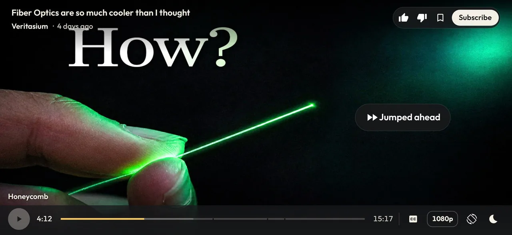
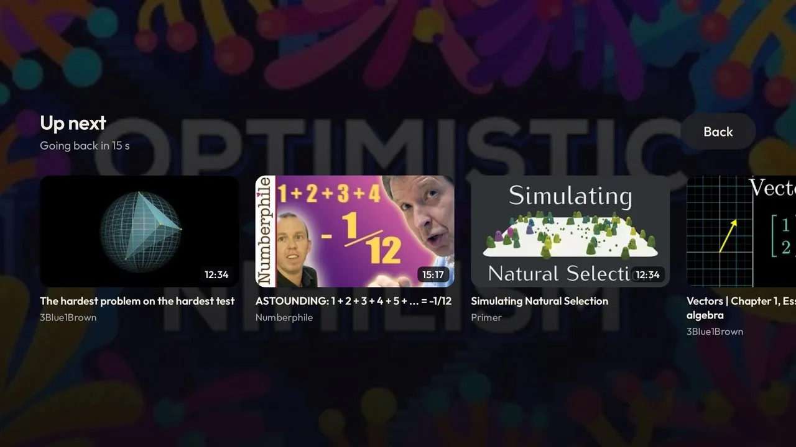
Falling asleep to videos
BeamTube grew out of falling asleep to playlists on the TV, so the player has a sleep mode. Tap the moon.
- Brightness
- 100, 50, 25, 10 or 0%. The picture and captions dim without touching the TV’s own brightness, so the room stays dark while the sound goes on. The rest of the app dims with them until you close it.
- Then play
- How many more videos of the playlist play after this one, from none to all.
- When done
- On the TV, stay on or turn the TV off when the last video ends. You get ten seconds to cancel, and with HDMI-CEC the TV set switches off too.
On a phone, switch the screen off and the video keeps playing as audio only, with the controls on the lock screen. Leave the app while a video plays and it moves into a small floating window.
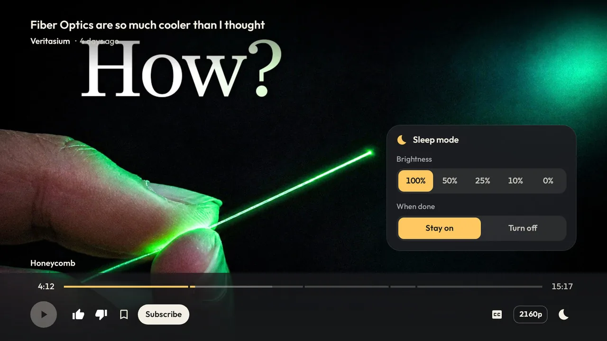
Explore, through the channels you trust
Recommended is still there, if you like it. Explore is another way to find new things. Creators often list channels they like on their own channel page, and Explore reads those lists from the channels you subscribe to.
It shows videos from about ten of those channels at a time, a couple of recent ones and a couple of their best-known, and every refresh draws a different set. Channels you already follow or blocked, second channels of creators you follow, and videos you’ve watched are left out.
The date, duration and sort filters work here too, so “60 minutes or more, before 2018” is a perfectly good way to spend an evening.
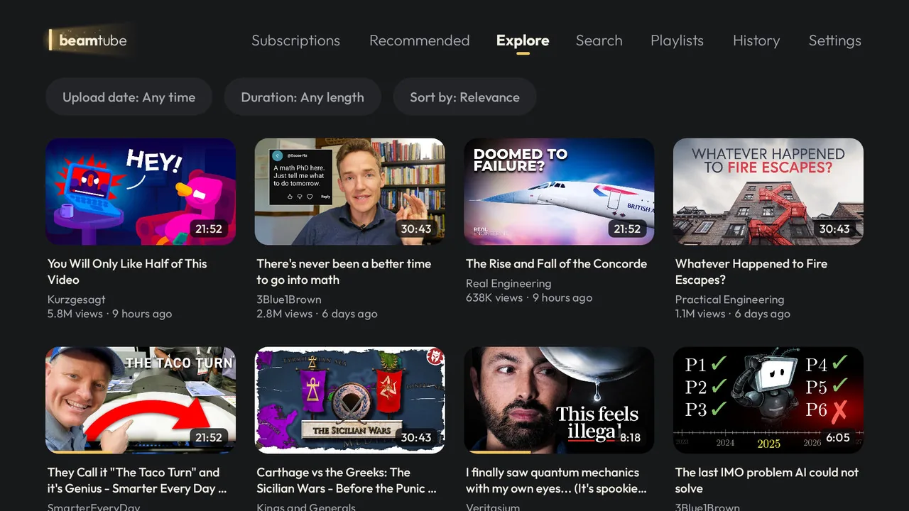
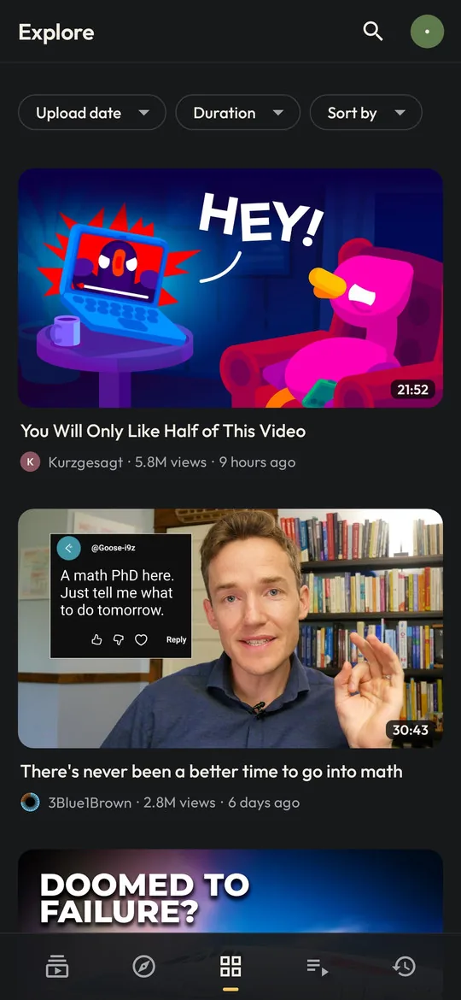
Your topics
The first time you open BeamTube, it asks what you’d like to see more of and what you’d like to see less of. There are more than 40 suggestions, from documentaries, history and engineering to sleep videos, or gaming, news and celebrity gossip on the other side.
- See more of: these come first in Recommended.
- See less of: these don’t show up in Recommended, in Explore or in subscribed playlists.
- Your subscriptions are never filtered. You chose those channels.
A topic is just a name and a list of keywords, matched as whole words in the title and the channel name. In Settings you can change any topic, add your own, or block a channel so it disappears everywhere.
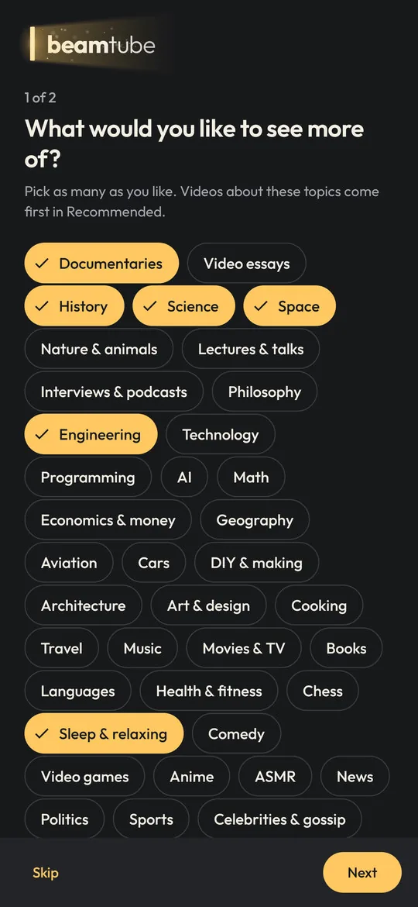
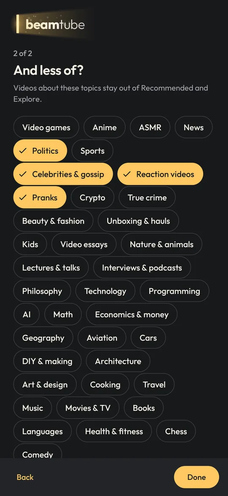
Subscribe to playlists
YouTube lets you subscribe to channels, but not to playlists. In BeamTube, open a playlist from any channel and tap Subscribe. From then on, new videos added to it show up in your Subscriptions, next to the videos from your channels.
The subscription is saved in your YouTube account, so it’s the same on all your devices. If you already follow the channel, its videos aren’t repeated.
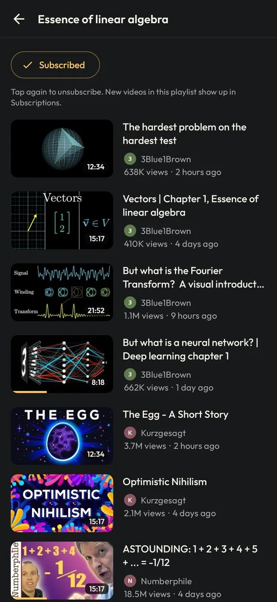
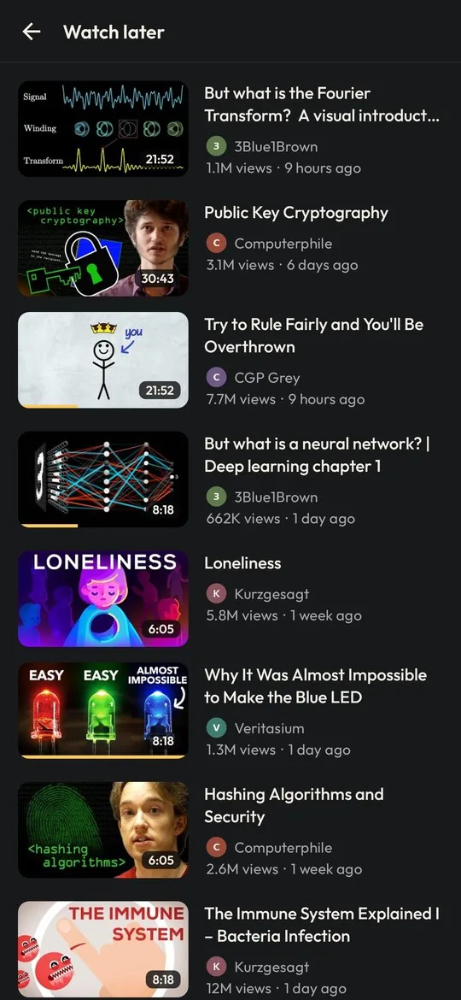
One app on every screen
The same APK runs on your phone, your tablet and your Android TV, and picks the right interface by itself.
On the TV
- Made for the remote: big cards, clear focus, everything reachable with the arrows.
- Hold OK on a video for a quick menu: save it, remove it or go to the channel.
- Sign in by scanning a QR code with your phone.
- The YouTube button on your remote can open BeamTube. It learns your remote’s key by itself.
- Come back after a while and Subscriptions are already refreshed, with the new videos on top.
- Rest the focus on a video for a moment and it starts getting ready, so it opens faster.
On phones and tablets
- Double-tap the sides of the video to skip 10 seconds, and keep tapping to add more.
- Swipe sideways to switch tabs, pull down to refresh.
- Long-press a thumbnail to save it to Watch later.
- The player turns by itself to fit the video, and a button switches orientation.
- On tablets, three columns in portrait and a side rail in landscape.
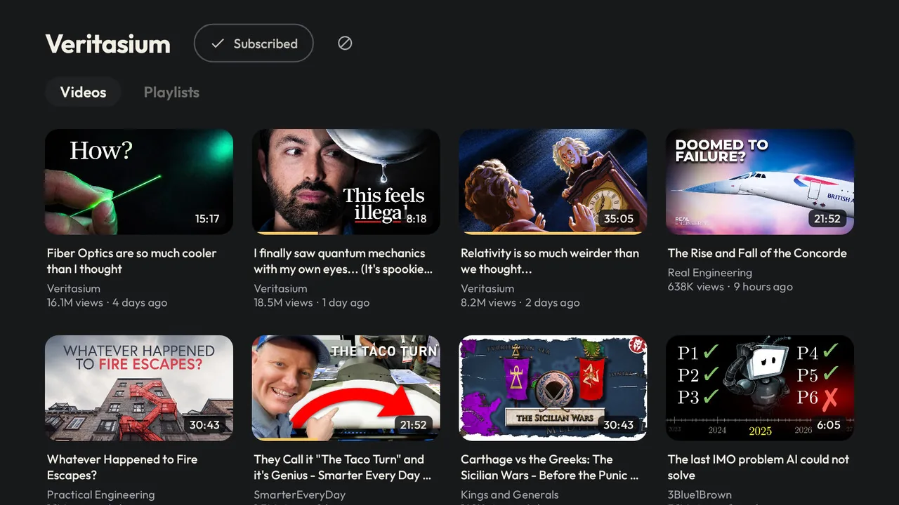
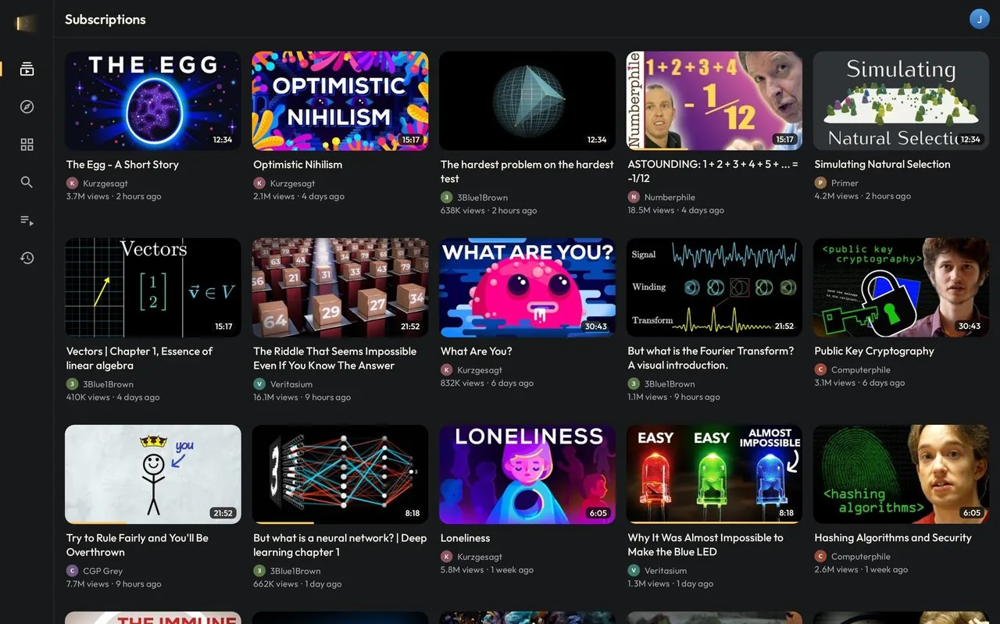
Make it yours
Seven icon colors and seven highlight colors, in Settings. The highlight color is used for the open tab, progress bars, focus on the TV and the player.
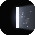
English, Portuguese and Spanish. BeamTube follows your device’s language, or you can pick one in Settings.
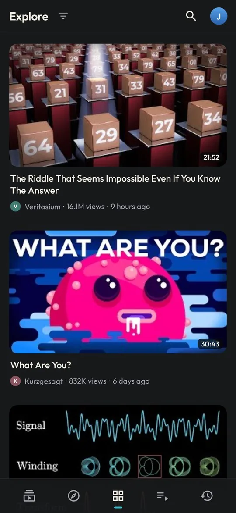
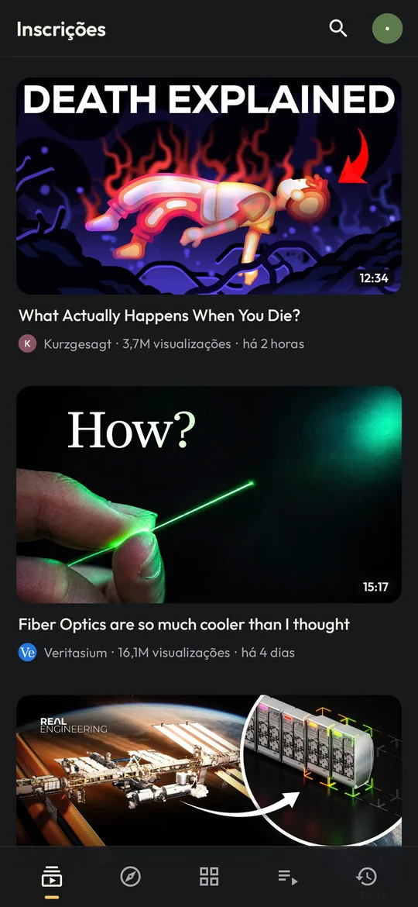
What’s not in BeamTube
- Shorts
- Comments
- Live chat
- Notifications
- Uploads
- Trending
- Shopping
- Most buttons
Left out on purpose. You can like, dislike, save and subscribe, and that’s it. If you need the rest, the official app is still there.
Install
BeamTube needs Android 6.0 or newer on an ARM device. That’s nearly every phone, tablet and Android TV.
-
Download
Get
Latest releasebeamtube-X.Y.Z.apkfrom the latest release on GitHub and install it. On a TV, a file manager or the Downloader app makes this easier. -
Sign in
Open BeamTube and sign in with the code at youtube.com/activate, or scan the QR code on the TV. You sign in on Google’s own page, and BeamTube never sees your password.
-
Stay up to date
In Obtainium, add this address and BeamTube updates itself from the releases.
https://github.com/JohanKRS/beamtube
Open YouTube links in BeamTube
On Android 12 and newer, open the YouTube app’s page in the system settings, go to “Open by default” and turn off “Open supported links”. Then open BeamTube’s page there and add youtube.com, m.youtube.com and youtu.be.
Turning the TV off, and the remote’s YouTube button
Both need BeamTube’s Accessibility service. In BeamTube, Settings > YouTube button on the remote shows whether it’s on and takes you there. The service only puts the device to sleep and listens for the YouTube button. It doesn’t read the screen. On Android 13 and newer, an app installed outside the Play Store may need “Allow restricted settings” first (App info > ⋮).
Privacy
- Nothing goes to the developer. BeamTube has no servers, no ads, no analytics and no crash reporting of its own.
- It talks only to YouTube and Google. That’s how it signs you in, loads your lists and plays videos, like any YouTube client.
- Your settings stay on your device. Topics, blocked channels and watch positions too. Signing out deletes the lists cached on it.
- Links stay out of your history. Videos opened from other apps aren’t added to your watch history, unless you choose otherwise.
Open source
BeamTube is written in Kotlin with Jetpack Compose and plays video with Media3/ExoPlayer. Sign-in, feeds, playlists and streams come from MediaServiceCore, the engine behind SmartTube, used unchanged. The code is on GitHub under the MIT License.